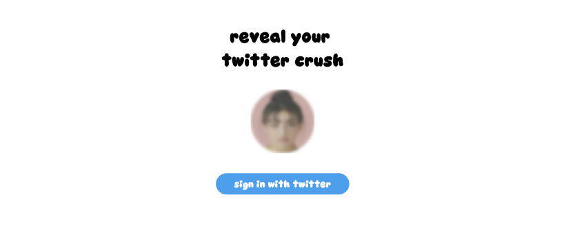

written by Vidy Thatte
Layering new information and meaning on top of your social graphs can lead to really compelling product use cases. How many of your friends are single? how many of your friends are looking for a job? how many of your friends are selling their gaming PC? how many of your friends just drank water? how many of your friends have a crush on you? 👀 ...Wouldn’t you wanna know?
Recently, I worked on a fun weekend project to boost my creativity. I've had many positive experiences on Twitter, including meeting my friends, girlfriend, raising money from investors, and hiring people. Therefore, I wanted to explore how to find ways for the Twitter graph to be more engaging and also experiment with novel acquisition tactics.
The project attracted around 2,000 visitors within the first two days just through sharing on my twitter alone, and I received a lot of feedback on how to improve it. Some suggestions included implementing a ranking system, showing your top 3-5 crushes instead of just one, and creating an iOS app with double opt-in mode.
I do believe there's a standalone product that could be huge in this space, probably related to dating, built on top of your existing social graphs. In fact, we may or may not be launching a sequel really soon.